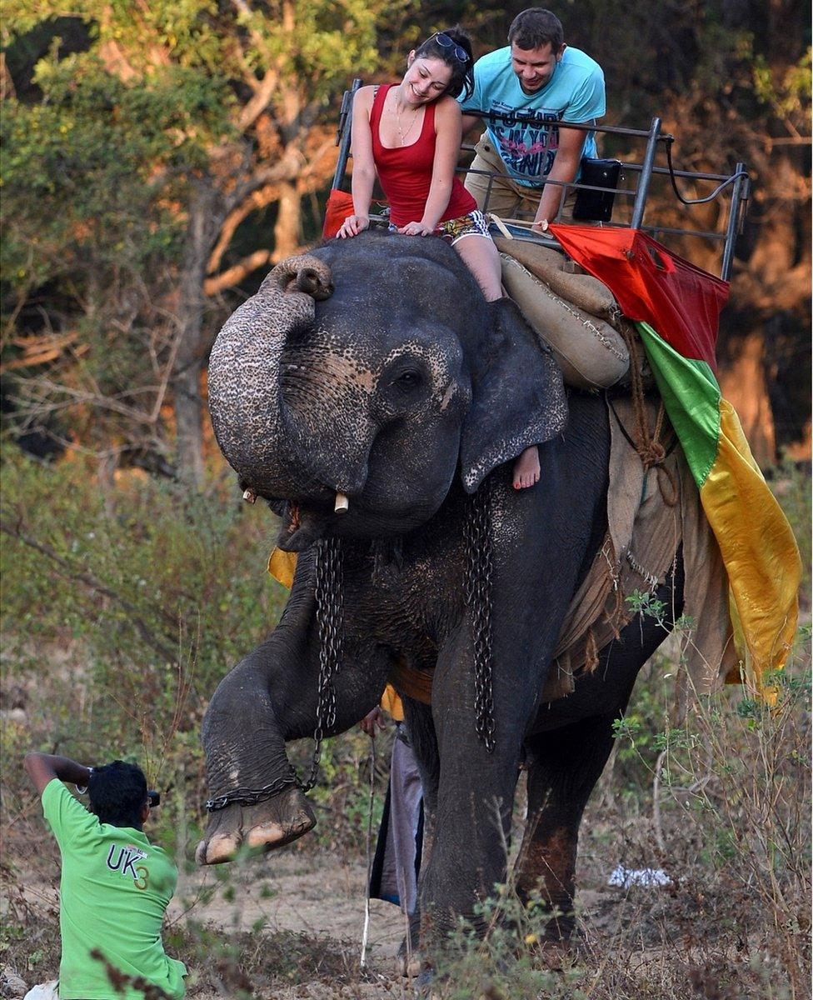

Elefantridning
Omkring 3.000 elefanter lever under groteske forhold i fangenskab i Thailand og bare indenfor de sidste 10 år er det steget 70%. Der bliver forsat avlet på elefanter i fangenskab for at tiltrække turister. Selvom elefantindustrien virker harmløs fra turisters perspektiv gennemgår disse elefanter traumer fra de er unger indtil de ikke længere kan holde til presset fra industrien. En metode som de benytter er at adskille mor og unger allerede efter 2 år da man vil blive ved med at tvangsavle og derved øge indtjeningen. Men ved at de adskiller mor og unge i sådan en tidlig alder kan dette fremme psykiske traumer (PTSD), en lang periode af sorg, adfærdsproblemer samt ungen mister social og adfærdsmæssig læring.
Fysik vold og kroniske smerter
For at gøre elefanterne til samarbejdsvillige arbejdsredskaber bliver de allerede fra de er helt unge slået med skarpe jernkroge så de bliver mere føjelige. Når de efter hård træning er klar til at tjene penge, lever de for at tilfredsstille turister og efter en lang arbejdsdag bliver de lænket og isoleret trods at det er bevis for at elefanter er flokdyr og ikke trives at leve isoleret fra flokken. Derudover bliver mange af elefanterne i fangenskab fejlernærede og dette leder i de fleste tilfælde til fodskaber med betændte sår og trods smerterne tvinges de alligevel til at arbejde hver dag.
Elefantridning kulturel oplevelse eller dyremishandling?
Elefant ridning er en populær turistattraktion i Thailand og virker harmløs for et dyr i den størrelse at skulle bære på vægten fra mennesker men mange timer af dagen med tunge sadler og mange rideture skader elefanternes ryg som giver dem kroniske smerter. Studier har dokumenteret at elefanter der lever under disser forhold udvikler en adfærd hvor de nikker med hovedet samt vugger frem og tilbage indikere dyb psykisk mistrivsel.
Alternativer
Der findes dog andre gode muligheder for at se elefanter og samtidig støtte gode formål. Der er flere etiske elefant reservater hvor man betragter elefanterne fra lang afstand og uden dyrene lider overlast. Elefanter der bor i disse elefantparker eller reservater er ofte elefanter som er blevet reddet for industrien og sat fri i reservatet hvor de kan finde livsglæden igen og blive en del af en flok. Det kan være svært at navigere i hvilke steder som ikke støtter dyremishandling men nogen gode tommelfingerregel er at ingen etiske elefantparker tilbyder elefantrideture, de har ikke lænker på og der bliver ikke tilbudt elefantshows.
